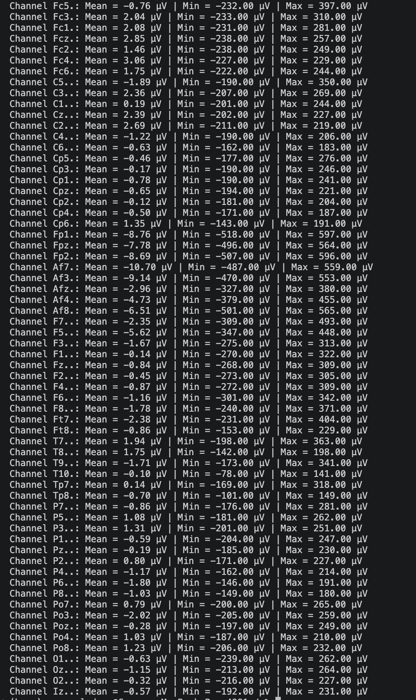

Loads a single EDF file with MNE and prints per channel mean, minimum, and maximum amplitude in microvolts.
Before committing to any visualization or modeling approach, it helps to know the raw amplitude range of the data. This script is a one shot diagnostic: load a single recording, convert from volts to microvolts, and print the mean, minimum, and maximum for every channel. The output drives two downstream decisions: whether channels need rereferencing, and whether any channels are clearly dead or saturated.
No BioSig, no MATLAB, and no EEG dataset of any kind — this is pure Python and MNE.
This script reads a single .edf file, so any file from
EEG CNN Dataset EDF.zip
on Zenodo will work, baseline or task segment alike.
The edf_file path at the top of the script is hardcoded to one specific file on one specific machine.
Update it to point at whichever .edf file you want statistics for before running.
# Load EDF and extract all channels as a numpy array
raw = mne.io.read_raw_edf(edf_file, preload=True, verbose=False)
data, times = raw.get_data(return_times=True)
# Convert volts to microvolts
data_uV = data * 1e6
# Per channel descriptive statistics
means_uV = np.mean(data_uV, axis=1)
mins_uV = np.min(data_uV, axis=1)
maxs_uV = np.max(data_uV, axis=1)
for ch_name, ch_mean, ch_min, ch_max in zip(raw.ch_names, means_uV, mins_uV, maxs_uV):
print(f"Channel {ch_name}: Mean = {ch_mean:.2f} µV | Min = {ch_min:.2f} µV | Max = {ch_max:.2f} µV")
The 64 channel BCI2000 recordings store data in volts. A mean amplitude near zero is expected for a well referenced EEG signal; channels with means far from zero (for example plus or minus 10 µV or more) often indicate electrode drift or a bad reference. Peak amplitudes in the plus or minus 200 to 500 µV range are typical for scalp EEG; anything beyond plus or minus 1000 µV is likely a movement artifact or disconnected electrode.
This output fed directly into the hardcoded statistics used in Script 17 to generate realistic simulated EEG. Rather than guessing plausible ranges, the simulated signal boundaries come from these measured values on a real subject.
